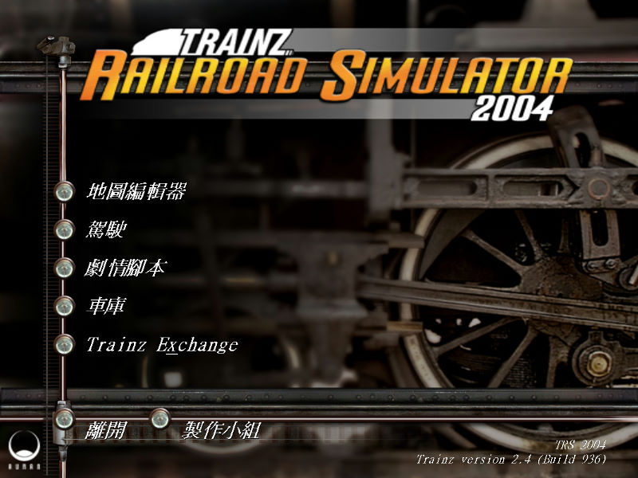
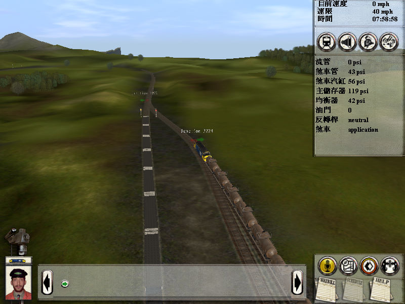
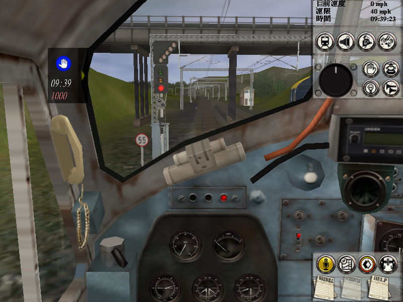

名稱：鐵道夢想家2／模擬火車2004 (Trainz Railroad Simulator 2004／Trainz 2004，中文／英文版)
簡介：Auran 2004年出品的鐵路建造營運模擬遊戲，由Strategy First代理發行。2005年由
淇倫互動中文化，並由新造科技發行 [待補]。



備註：本版為繁中版，缺繁中光碟
保護：英文版為序號（ATRS-99NE-JV8F-XMXC-57ZG-2SFJ）
備註：繁中版為2.4版（Build 936）
備註：繁中版非安裝移機者，需加入下列Registry，否則會變成英文版：
[HKEY_LOCAL_MACHINE\SOFTWARE\Auran\Products\Trainz\0]
"ProductLanguage"="CN"
檔案：trainz-railroad-simulator-2004-patch-v668-v2365-sp4-us.rar = 英文2.4更新檔